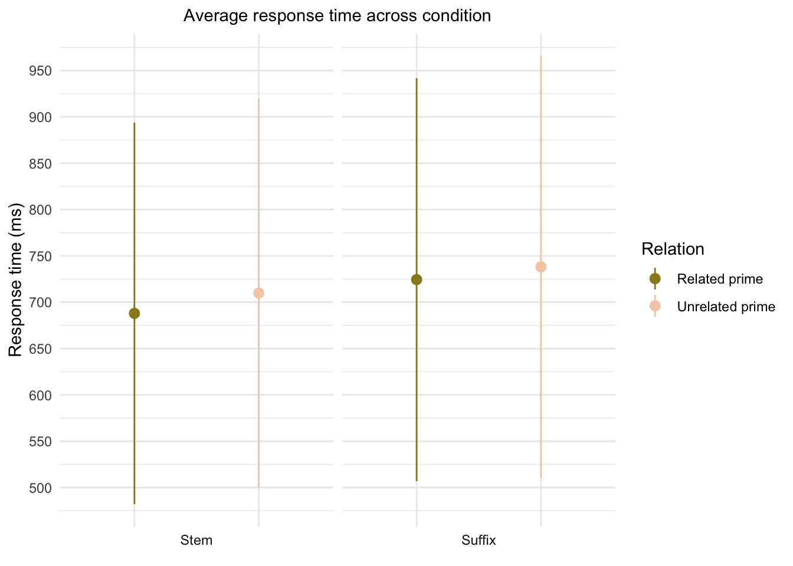

library(tidyverse)
library(dplyr)
library(ggplot2)
library(wesanderson)
library(reshape2)target_sd <- left_join(tstem_sd, tsuffix_sd, by = c('condition'))
target_sd <- left_join(target_sd, tfq_sd, by = c('condition'))
target_sd <- melt(target_sd, id=c("condition"))
target_word <- left_join(tstem_mean, tsuffix_mean, by = c('condition'))
target_word <- left_join(target_word, tfq_mean, by = c('condition'))
target_word <- melt(target_word, id=c("condition"))
target_word <- left_join(target_word, target_sd, by = c('condition', 'variable'))Since target words were the same regardless of the condition, I renamed one condition and removed the others.
target_word<- target_word %>%
filter(condition == "stem_control")
target_word <- target_word %>%
rename(SD = value.y)
target_word <- target_word %>%
rename(value = value.x)
target_word[1] = 'target words'plot1 <- ggplot(data = target_word, mapping = aes(x = variable, y = value, fill = variable)) +
geom_col()+
geom_errorbar(aes(ymin = value - SD, ymax = value + SD), width = .2) +
theme_minimal()+
scale_x_discrete(labels = c("Stem length",
"Suffix length",
"Target frequency"),
name = NULL) +
scale_y_continuous(name = NULL,
expand = c(0, 0),
limits = c(0, 6),
breaks = seq(0, 6, 0.5)) +
scale_fill_manual(values = wes_palette("Moonrise3", n= 3),
guide = "none")+
ggtitle(label = "Average attributes for target words") +
theme(plot.title = element_text(size = "11",
hjust = "0.5"))
print(plot1)ggsave(filename = "targetwords.png", plot = plot1)orth_sd <- melt(orth_sd, id=c("condition"))
orth_sd <- orth_sd %>%
rename(SD = value)
orth_mean <- melt(orth_mean, id=c("condition"))
orth <- left_join(orth_mean, orth_sd, by =c("condition", "variable"))
orth <- mutate(orth, relation = ifelse(orth$condition == "stem_control",
"Unrelated prime",
ifelse(orth$condition == "suffix_control",
"Unrelated prime", "Related prime")))
orth <- mutate(orth, cond = ifelse(orth$condition == "stem_control",
"stem",
ifelse(orth$condition == "stem_priming",
"stem", "suffix")))plot2 <- ggplot(data = orth, mapping = aes(x = cond, y = value, fill = cond))+
geom_col()+
geom_errorbar(aes(ymin = value - SD, ymax = value + SD), width = .2)+
facet_wrap(vars(relation), strip.position = "bottom")+
theme_minimal()+
scale_x_discrete(labels = NULL,
name = NULL)+
scale_y_continuous(name = NULL)+
scale_fill_manual(values = wes_palette
(name = "GrandBudapest2", n= 2),
name = "Condition",
labels = c("Stem",
"Suffix"))+
ggtitle(label = "Orthographic overlap between target and prime words")+
theme(plot.title = element_text(size = "11",
hjust = "0.5"))
print(plot2)ggsave(filename = "orthoverlap.png", plot = plot2)prfq_sd <- melt(prfq_sd, id=c("condition"))
prfq_sd <- prfq_sd %>%
rename(SD = value)
prfq_mean <- melt(prfq_mean, id=c("condition"))
prfq <- left_join(prfq_mean, prfq_sd, by =c("condition", "variable"))
prfq <- mutate(prfq, relation = ifelse(prfq$condition == "stem_control",
"Unrelated prime",
ifelse(prfq$condition == "suffix_control",
"Unrelated prime", "Related prime")))
prfq <- mutate(prfq, cond = ifelse(prfq$condition == "stem_control",
"Stem",
ifelse(prfq$condition == "stem_priming",
"Stem", "Suffix")))plot3 <- ggplot(data = prfq, mapping = aes(x = relation, y = value, fill = relation))+
geom_col()+
geom_errorbar(aes(ymin = value - SD, ymax = value + SD), width = .2)+
facet_wrap(vars(cond), strip.position = "bottom")+
theme_minimal()+
scale_x_discrete(labels = NULL,
name = NULL)+
scale_y_continuous(name = NULL,
breaks = seq(0, 3, 0.5))+
scale_fill_manual(values = wes_palette
(name = "Royal2", n= 2),
name = "Relation")+
ggtitle(label = "Word frequency for prime words")+
theme(plot.title = element_text(size = "11",
hjust = "0.5"))
print(plot3)ggsave(filename = "primefq.png", plot = plot3)prstem_sd <- melt(prstem_sd, id=c("condition"))
prstem_sd <- prstem_sd %>%
rename(SD = value)
prstem_mean <- melt(prstem_mean, id=c("condition"))
prstem <- left_join(prstem_mean, prstem_sd, by =c("condition", "variable"))
prstem <- mutate(prstem, relation = ifelse(prstem$condition == "stem_control",
"Unrelated prime",
ifelse(prstem$condition == "suffix_control",
"Unrelated prime", "Related prime")))
prstem <- mutate(prstem, cond = ifelse(prstem$condition == "stem_control",
"Stem",
ifelse(prstem$condition == "stem_priming",
"Stem", "Suffix")))plot4 <- ggplot(data = prstem, mapping = aes(x = cond, y = value, fill = cond))+
geom_col()+
geom_errorbar(aes(ymin = value - SD, ymax = value + SD), width = .2)+
facet_wrap(vars(relation), strip.position = "bottom")+
theme_minimal()+
scale_x_discrete(labels = NULL,
name = NULL)+
scale_y_continuous(name = NULL,
expand = c(0, 0),
limits = c(0, 6),
breaks = seq(0, 6, 0.5))+
scale_fill_manual(values = wes_palette
(name = "GrandBudapest2", n= 2),
name = "Condition")+
ggtitle(label = "Stem length across condition")+
theme(plot.title = element_text(size = "11",
hjust = "0.5"))
print(plot4)ggsave(filename = "stemlength.png", plot = plot4)prsuffix_sd <- melt(prsuffix_sd, id=c("condition"))
prsuffix_sd <- prsuffix_sd %>%
rename(SD = value)
prsuffix_mean <- melt(prsuffix_mean, id=c("condition"))
prsuffix <- left_join(prsuffix_mean, prsuffix_sd, by =c("condition", "variable"))
prsuffix<- mutate(prsuffix, relation = ifelse(prsuffix$condition == "stem_control",
"Unrelated prime",
ifelse(prsuffix$condition == "suffix_control",
"Unrelated prime", "Related prime")))
prsuffix <- mutate(prsuffix, cond = ifelse(prsuffix$condition == "stem_control",
"Stem",
ifelse(prsuffix$condition == "stem_priming",
"Stem", "Suffix")))plot5 <- ggplot(data = prsuffix, mapping = aes(x = cond, y = value, fill = cond))+
geom_col()+
geom_errorbar(aes(ymin = value - SD, ymax = value + SD), width = .2)+
facet_wrap(vars(relation), strip.position = "bottom")+
theme_minimal()+
scale_x_discrete(labels = NULL,
name = NULL)+
scale_y_continuous(name = NULL,
expand = c(0, 0),
limits = c(0, 6),
breaks = seq(0, 6, 0.5))+
scale_fill_manual(values = wes_palette
(name = "GrandBudapest2", n= 2),
name = "Condition")+
ggtitle(label = "Suffix length across condition")+
theme(plot.title = element_text(size = "11",
hjust = "0.5"))
print(plot5)ggsave(filename = "suffixlength.png", plot = plot5)data_sd <- melt(data_sd, id=c("Condition"))
data_sd <- data_sd %>%
rename(SD = value)
data_mean <- melt(data_mean, id=c("Condition"))
dataplot <- left_join(data_mean, data_sd, by =c("Condition", "variable"))
dataplot <- dataplot %>%
rename(rt = value)
dataplot<- mutate(dataplot, relation = ifelse(dataplot$Condition == "stem_control",
"Unrelated prime",
ifelse(dataplot$Condition == "suffix_control",
"Unrelated prime", "Related prime")))
dataplot <- mutate(dataplot, cond = ifelse(dataplot$Condition == "stem_control",
"Stem",
ifelse(dataplot$Condition == "stem_priming",
"Stem", "Suffix")))plot6 <- ggplot(data = dataplot, mapping = aes())+
geom_pointrange(aes(x=relation,
y=rt,
ymin=(rt-SD),
ymax=(rt + SD),
colour = relation))+
facet_wrap(vars(cond), strip.position = "bottom")+
theme_minimal()+
scale_x_discrete(labels = NULL,
name = NULL)+
scale_y_continuous(name = "Response time (ms)",
breaks = seq(0, 1000, 50))+
scale_colour_manual(values = wes_palette
(name = "Royal2", n= 2),
name = "Relation")+
ggtitle(label = "Average response time across condition")+
theme(plot.title = element_text(size = "11",
hjust = "0.5"))
print(plot6)
ggsave(filename = "dataplot.png", plot = plot6)acc_sd <- melt(acc_sd, id=c("Condition"))
acc_sd <- acc_sd %>%
rename(SD = value)
acc_mean <- melt(acc_mean, id=c("Condition"))
acc <- left_join(acc_mean, acc_sd, by =c("Condition", "variable"))
acc <- acc %>%
rename(Accuracy = value)
acc <- mutate(acc, relation = ifelse(acc$Condition == "stem_control",
"Unrelated prime",
ifelse(acc$Condition == "suffix_control",
"Unrelated prime", "Related prime")))
acc <- mutate(acc, cond = ifelse(acc$Condition == "stem_control",
"Stem",
ifelse(acc$Condition == "stem_priming",
"Stem", "Suffix")))
acc <- mutate(acc, percent = acc$Accuracy*100)plot7 <- ggplot(data = acc, mapping = aes())+
geom_pointrange(aes(x=Condition,
y=percent,
ymin=(percent - SD),
ymax=(percent + SD),
colour = Condition))+
theme_minimal()+
scale_x_discrete(labels = NULL,
name = NULL)+
scale_y_continuous(name = "Response accuracy %",
expand = c(0, 0),
limits = c(80, 100),
breaks = seq(80, 100, 5))+
scale_colour_manual(values = wes_palette
(name = "Chevalier1", n= 4),
name = "Experiment condition",
labels = c("Stem unrelated prime",
"Stem related prime",
"Suffix unrelated prime",
"Suffix related prime"))+
ggtitle(label = "Response accuracy across condition")+
theme(plot.title = element_text(size = "11",
hjust = "0.5"))
print(plot7)ggsave(filename = "accuracy.png", plot = plot7)